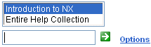
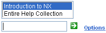

搜索帮助库
使用搜索 命令来快速查找信息，搜索允许您在特定的应用模块中搜索，或者搜索整个帮助库。
命令来快速查找信息，搜索允许您在特定的应用模块中搜索，或者搜索整个帮助库。

当搜索完成后，结果列表将会列出包含您搜索字符的每个页面。
如果系统无法找到该关键字任何文档，将会显示找不到您的搜索词，如果看到这个信息，尝试拓宽搜索范围，或者输入新的搜索关键字。
使用搜索 命令来快速查找信息，搜索允许您在特定的应用模块中搜索，或者搜索整个帮助库。
命令来快速查找信息，搜索允许您在特定的应用模块中搜索，或者搜索整个帮助库。

当搜索完成后，结果列表将会列出包含您搜索字符的每个页面。
如果系统无法找到该关键字任何文档，将会显示找不到您的搜索词，如果看到这个信息，尝试拓宽搜索范围，或者输入新的搜索关键字。